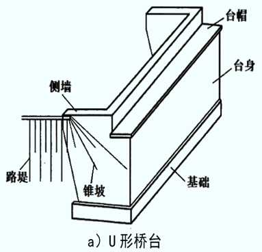
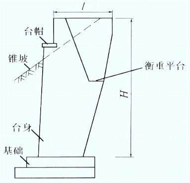

第三章 桥台
第一节 概述
[A6-3.1]桥台是桥梁的重要组成部分，位于全桥两端，除了支承桥跨结构外，还应使桥梁和路堤连接匀顺，并要支挡路基填土，抵御路堤土压力，保证桥台不发生滑移和倾覆。如图6-3-1所示。
图6-3-1 桥台示意图
[A6-3.2]桥台通常由台帽、台身和基础三部分组成。台帽也称作帽梁，一般为钢筋混凝土厚板（梁），台帽上面放置支承桥跨结构的支座，并且将支座传递的竖直反力、水平反力均匀分布到台身的整个截面，最终传递到基础上。
[A6-3.3]桥台不仅是主要的传力构件，还承受一定的外荷载作用，因此，应具有足够的强度、刚度和稳定性。桥台基础是连接台身并坐落在土或岩石地基上的构造物，对地基的承载能力、沉降量、地基与基础之间的摩擦力等都提出一定的要求，避免在上述荷载作用下产生危害桥梁整体结构的水平位移、竖向位移和转角位移。在桥梁设计中，台帽、台身和基础是作为一个整体进行设计的，但在课程学习中，桥台基础将在“基础工程”课程中学习。
[A6-3.4]由于桥梁结构形式不同及所处工程环境不同，桥台将设计成不同构造类型，与之相对应的施工方法也不尽相同。如何设计出适合桥梁结构的桥台，应根据路线、地形、地质、水文、气象、环境、桥跨结构、作用效应、材料、施工条件和经济等因素综合考虑。本章将重点介绍工程中几种常用桥台类型的构造、设计、计算和施工方法。
[A6-3.5]桥台按结构形式可分为重力式（实体式）桥台、轻型桥台、组合式桥台等。
[A6-3.6]重力式桥台主要依靠自重来平衡台后的土压力，一般采用圬工材料或钢筋混凝土材料建造，主要采用就地砌筑或浇筑的方法施工。重力式桥台依据桥梁跨径、桥台高度及地形条件的不同有多种形式，工程中常用的类型为U形桥台[图6-3-2a）]和埋置式桥台[图6-3-2b）]。U形桥台的台身是由前墙和两个侧墙构成的U字形结构而得名，适用于填土高度在4～10cm左右的桥梁，缺点是桥台体积和自重较大，增加了地基的负荷，此外，桥台的两个侧墙之间填土容易积水，结冰后冻胀，使侧墙产生裂缝，所以，宜用渗水性较好的土夯填，并做好台后排水措施。埋置衡重式桥台主要利用衡重平台及其上的填土重力平衡部分土压力，材料相对比较节省，适用于跨径大于20m，高度大于10m的跨越深沟及山区特殊地形桥梁。
a）U形桥台
b）埋置衡重式桥台（立面）
图6-3-2 重力式桥台
[A6-3.7]轻型桥台的体积轻巧、自重较小，一般由钢筋混凝土材料建造，借助桥台结构的整体刚度和材料强度承受外力，从而可节省材料，降低对地基承载力的要求，适用于软土地基上修建的桥台。常用形式有埋置式桥台、钢筋混凝土薄壁桥台等。埋置式桥台是将台身埋在锥形护坡中，只露出台帽在外以安置支座及上部构造。这样，桥台所受的土压力大为减小，桥台的体积也就相应地减少。但是由于台前护坡是用片石作表面防护的一种永久性设施，存在着被洪水冲毁而使台身裸露的可能，故设计时必须进行强度和稳定的验算。埋置式桥台的缺点是，由于护坡伸入到桥孔，压缩了河道而减少排洪面积，或者为了不压缩河道，就要适当增加桥长；同时，锥坡脚也易受到流水冲刷。按台身的结构形式，埋置式桥台可以分为：后倾式（图6-3-3）、肋形埋置式（图6-3-4）、柱式（图6-3-5）和框架式（图6-3-6）等。柱式桥台一般在填土高小于5m时采用，大于5m时采用肋形埋置式或框架式，框架式桥台适用于地基承载力较低、台高大于4m、跨径大于10m的桥梁。钢筋混凝土薄壁桥台是由扶壁式挡土墙和两侧的薄壁侧墙构成，如图6-3-7b）所示，挡土墙由一般厚度不小于150～300mm的前墙和间距2.5～3.5m的扶壁所组成。台顶由竖直小墙和支于扶壁上的水平板构成，用以支承桥跨结构。两侧薄壁可以与前墙垂直，有时也做成与前墙斜交。前者称U字形薄壁桥台，后者称八字形薄壁桥台，如图6-3-7c）所示。常用的形式有悬臂式、扶壁式、撑墙式及箱式等，如图6-3-7a）所示。这种桥台不仅可以减少圬工体积40％～50％，同时因自重减轻而减小了对地基的负荷。故适用于软弱地基的条件，但其构造和施工比较复杂。
图6-3-3 后倾式桥台
图6-3-4 肋形埋置式桥台
图6-3-5 双柱式桥台
图6-3-6 框架式桥台
a）立面；b）平面；c）主要类型
图6-3-7 钢筋混凝土薄壁轻型桥台
[A6-3.8]为使桥台轻型化，桥台本身主要承受桥跨结构传来的竖向力和水平力，而台后的土压力由其他结构来承受，形成组合式的桥台。主要类型有桥台与挡土墙组合、过梁式、框架式组合桥台、无伸缩缝桥台等形式，一般用于中等跨径的桥梁。桥台与挡土墙组合桥台是由轻型桥台支承桥跨结构，台后设挡土墙承受土压力，台身与挡土墙分离，上端作伸缩缝，使受力明确。当地基条件较好时，也可将桥台与挡土墙放在同一个基础之上，如图6-3-8所示。这种组合式桥台可以不压缩河床，但构造较复杂，是否经济，需通过比较确定。过梁式桥台是桥台与挡土墙用梁结合在一起的桥台，当梁与桥台、挡土墙刚接时，则形成框架式组合桥台，如图6-3-9所示，框架的长度及过梁的跨径，由地形及土方工程比较确定，桥台越长，梁的材料用量就多，而桥台及挡土墙的材料数量相应的有所减少。无伸缩缝桥台（图6-3-10）直接利用钢筋将混凝土接线路面板与桥 头搭板连接起来，取消搭板尾端与道路间的接缝，将梁 体变形分散并传递到接线路面上。无伸缩缝桥台中主梁的温度等伸缩变形一部分由主梁吸纳，另一部分则由搭板引到与接线路面相接处（搭板末端）。
图6-3-8 桥台与挡土墙组合桥台

图6-3-9 框架式组合桥台
图6-3-10 无伸缩缝桥台
[学习提示]
[A6-3.9]一座桥梁的桥台一般是成对设置的。桥台的作用不仅要支承桥跨结构，还应与路堤顺接，因此，在承受桥跨结构传递荷载的同时，还承受路堤土压力及路堤破坏棱体上的荷载。靠自身重量平衡外力的桥台为重力式桥台，采用圬工材料建造，但因其自重大，对地基承载力要求较高；在地基承载力不高的地区，需减轻桥台自重，为轻型桥台，采用钢筋混凝土材料建造；将桥台支承桥跨结构部分与支挡路基土部分分开设计的桥台，为组合式桥台。
[A6-3.10]桥台的完整构造除了墩台帽和墩台身外，还包括其基础，当地基为坚质基岩时，可不设基础，基础设计在“基础工程”课程中介绍。
[思考与练习]
- 简述桥台的作用、组成及其分类。
- 说明重力式桥台和轻型桥台的特点及适用范围。